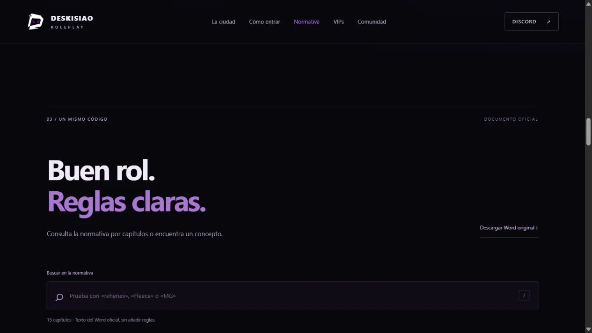
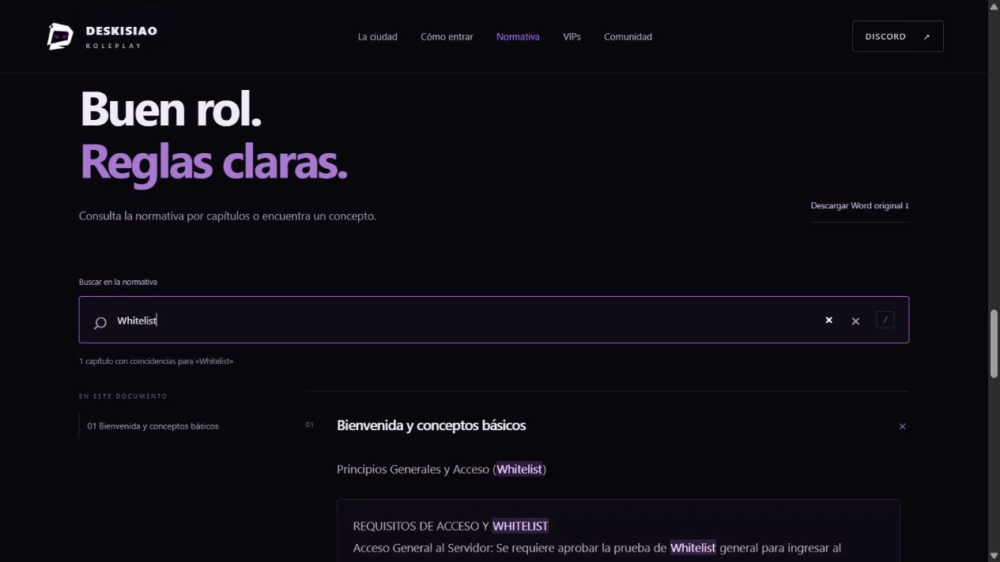
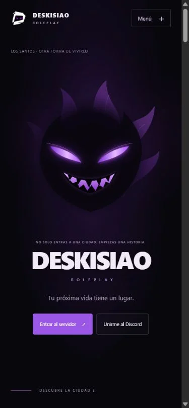

Contexto y objetivo
La web funciona como entrada pública a una comunidad de roleplay: presenta su identidad, explica cómo acceder y concentra las reglas. El problema de navegación consiste en orientar a visitantes nuevos y facilitar la consulta de un documento extenso. Esta entrega se evalúa como sitio web independiente del servidor FiveM.
Participación y organización técnica
Es un proyecto propio de comunidad. El sitio utiliza HTML semántico, una hoja CSS y JavaScript del navegador. El índice de normativa se encuentra en JSON y los enlaces se agrupan en la configuración pública. La presentación y la documentación del portafolio cuentan con asistencia de IA. Los recursos gráficos conservan su contexto y atribución.
Búsqueda sin interpretar entradas como HTML
La consulta filtra los bloques de normativa y resalta coincidencias con nodos de texto y elementos mark. La interacción no necesita convertir el texto escrito por el visitante en HTML. El documento original permanece disponible cuando el lector prefiere descargarlo o cuando la carga del índice falla.
Diseño e interacción adaptable
La navegación enlaza la presentación, el acceso, la normativa y la comunidad. El menú móvil comunica su estado mediante aria-expanded. Los capítulos permiten revisar partes concretas del documento; la búsqueda facilita localizar conceptos. La preferencia de movimiento reducido evita que la animación sea necesaria para acceder al contenido.
Publicación y límites del resultado
Cloudflare Pages entrega los archivos estáticos. La web no implementa una base de datos de jugadores ni un panel de administración del servidor. La publicación y el buscador son verificables desde el enlace oficial. No se infieren estadísticas de uso, conversiones, disponibilidad del juego ni resultados de rendimiento a partir de esa publicación.
Galería y recorrido sugerido
Las capturas nuevas muestran el inicio, el índice de normativa, una búsqueda y el inicio móvil. Puede recorrerse primero la página pública, buscar un concepto y abrir un capítulo. Las capturas conservan los colores originales de cada interfaz. Los enlaces oficiales permiten recorrer el proyecto publicado.
Arquitectura del proyecto
Esquema de responsabilidades. La descripción técnica distingue los componentes y su función.
Evidencias visuales







Selecciona una imagen para ampliarla. Capturas originales a color; consulta los enlaces oficiales para explorar cada proyecto.